本章学习目标（Objectives）
- 理解立方体贴图（6 张面图 + 3D 方向采样）；
- 用"巨大盒子 + 天空纹理"绘制天空；
- 用环境贴图模拟镜面反射（骷髅反射天空）；
- 实时渲染 6 面生成动态立方体贴图（球面反射实时变化）。
18.1 立方体贴图（Cube Mapping）
以物体为中心放一个轴对齐立方体，6 个面上各贴一张图（日出、草地、夜空…）。采样不用 uv 而用3D 方向向量：向量指向哪个面，就用该面上的对应纹素。DDS 里 6 张面按 +X、−X、+Y、−Y、+Z、−Z 顺序存储。应用：天空、环境反射、阴影/光探针。采样用 TextureCube gCubeMap : register(t0); + gCubeMap.Sample(gsamLinear, dir)。
18.2 环境贴图（Environment Maps）
"展开"的立方体六面拼图就是环境贴图（书中给了一张全景实例图）。可以离线预生成（照片球），也可以实时渲（18.5）。
18.3 天空绘制（Texturing a Sky）
思路：一个包围场景的大立方体/球，中心跟随相机（永远看不到"盒子外"），每个顶点存"指向它的方向"，PS 里用该方向采样环境贴图。要点：
- 绘制状态：深度测试但深度写入关，深度值永远最远（z = w 修正，SV_POSITION 的 z=1 技巧或 depth = 0 映射），让所有物体都遮住天空；
- 世界矩阵只带平移（每帧把盒子中心设为眼睛位置），去除旋转缩放。
18.4 模拟反射（Modeling Reflections）
光滑物体反射"周围环境"：PS 里算反射向量 r = reflect(-toEye, n)，用 r 采样环境贴图当镜面光颜色——不用任何真实光源反射计算就"像镜子"。书中还展示折射：用折射向量（折射率比值 n1/n2，Snell 定律）采样，玻璃/水效果（demo 截图里骷髅变玻璃）。
18.5 动态立方体贴图（Dynamic Cube Maps）
预生成的环境图是静态的（骷髅转动反射不变）。动态版：把想要反光的物体（球）放中心，在它位置架 6 台 90° 视角的相机，每帧把场景渲染 6 遍到 6 个 RTV（DepthStencil 视图同理，用 RTV 数组），生成实时环境图，再用于该物体的反射。第 12 章纹理数组 + 第 15 章动态索引 + 几何着色器（一次渲染到 6 面，可选优化）在此汇合。开销 ≈ 场景 ×6，只对少数重要物体使用。
本章小结
- TextureCube 用 3D 方向采样；DDS 六面 +X −X +Y −Y +Z −Z。
- 天空 = 相机中心大盒子 + 方向采样 + 最远深度不写深度。
- 环境反射 = reflect 向量采样；折射 = Snell 定律向量采样。
- 动态环境图 = 每帧渲染 6 面 → 只对少数物体。
🖼️ 原书插图（11 张，点击展开）
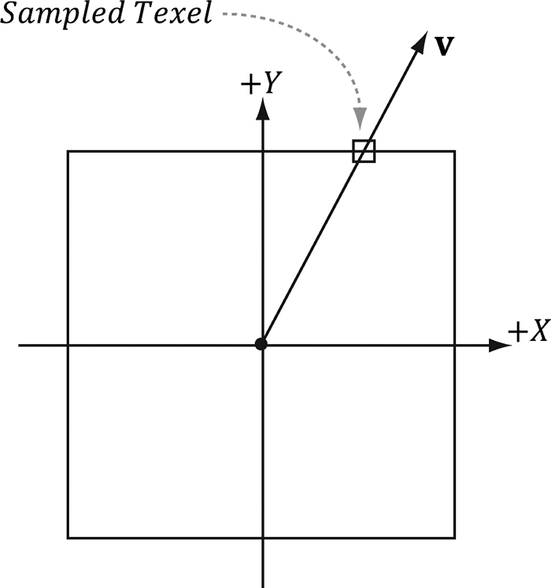
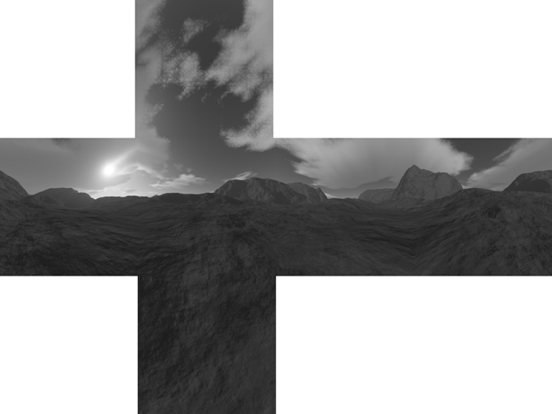
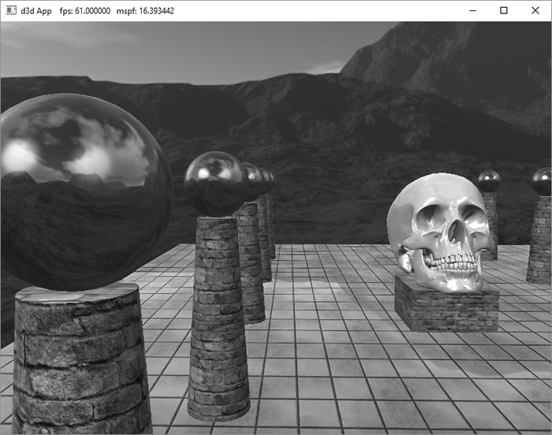
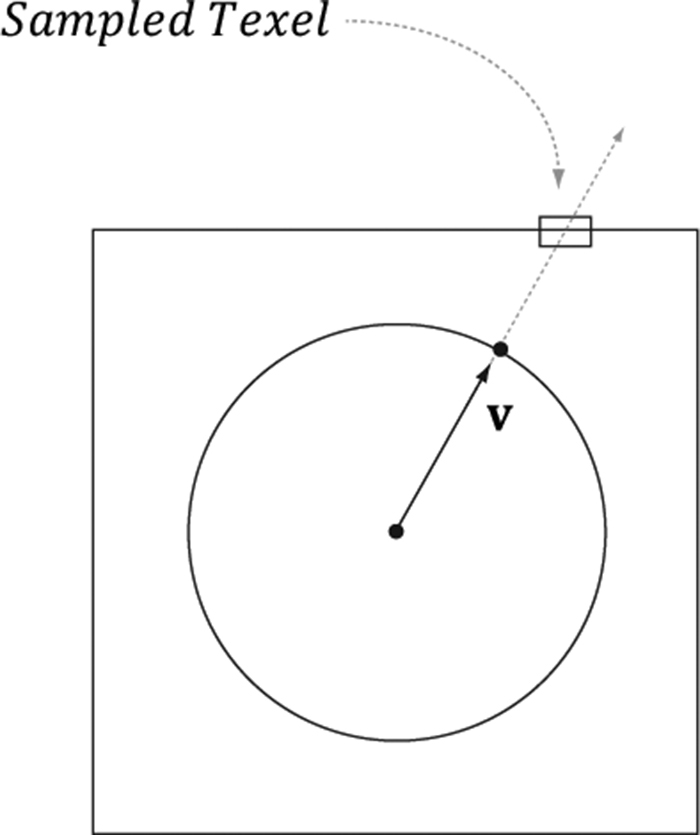
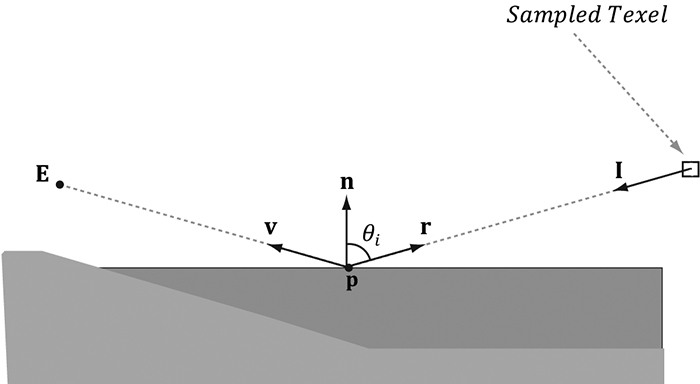
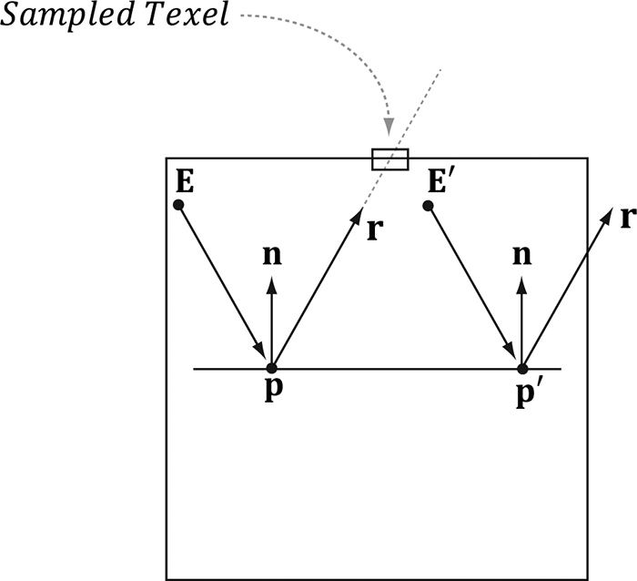
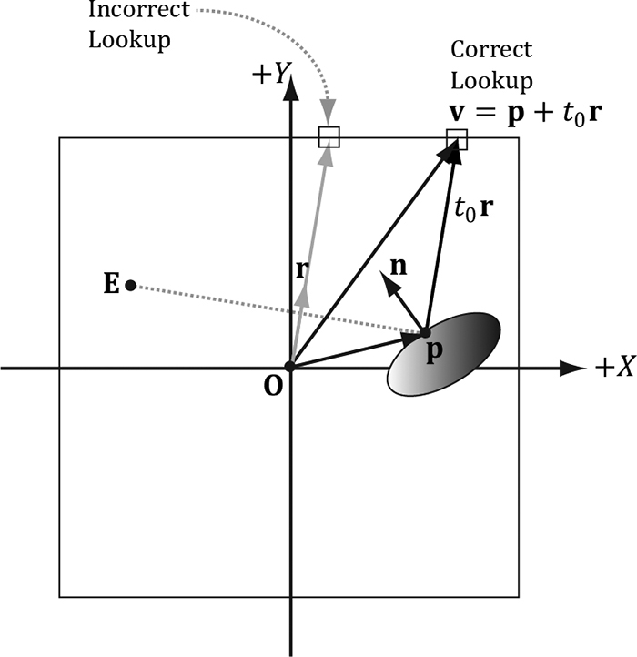
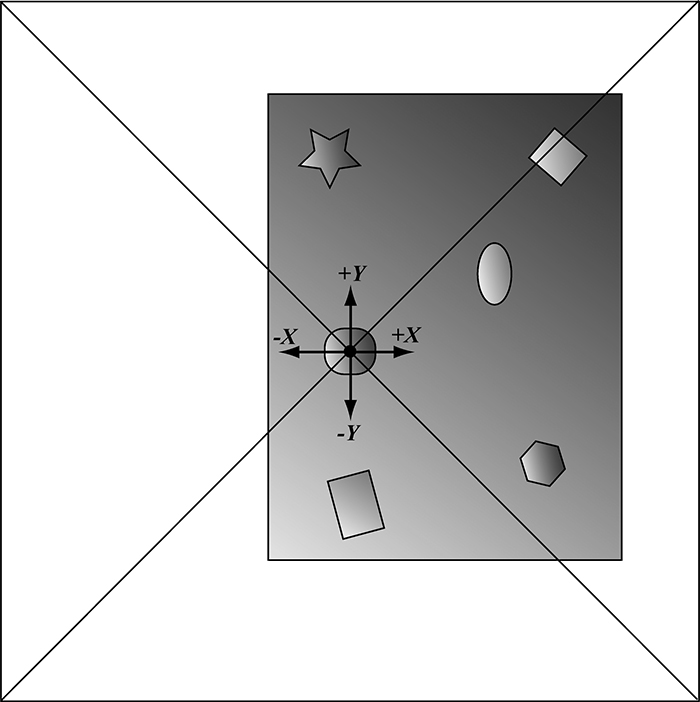
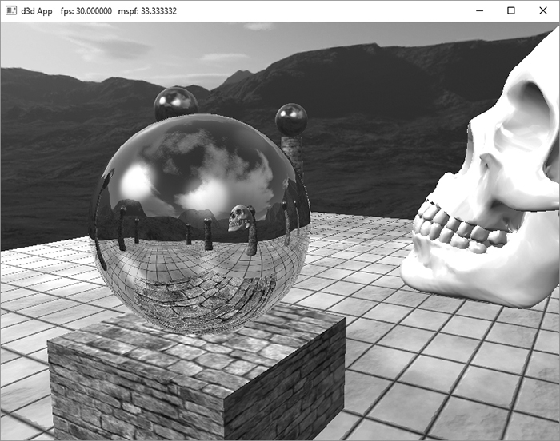
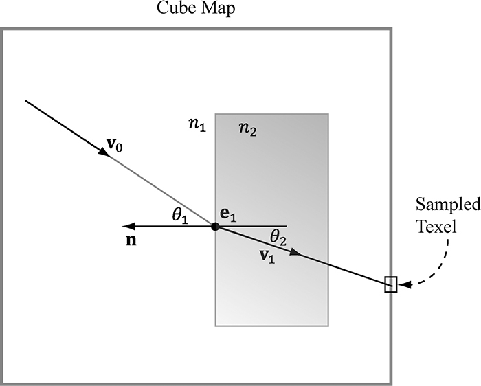
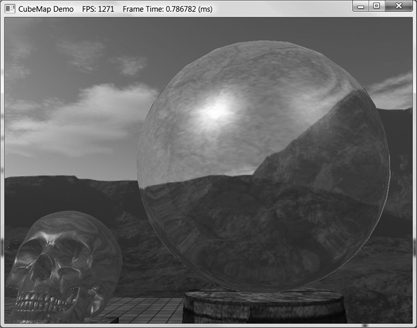